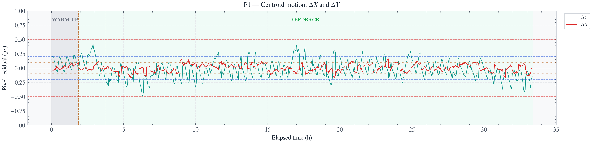

Phase-correlation workflow
A tuned ~150 px ROI, model convergence during warm-up, faster AO cadence and a relaxed TEC settle gate reduced dY RMS relative to the preceding V18 run.
Measured evidence · Stage 2–V18
The sequence begins with runs that exposed model, reference and actuator limits; continues through V11 and V17 endurance; and then improves detector tracking in V18. Different durations, environmental histories, references and measurement methods make these complementary experiments—not a simple league table.

Four distinct validation questions
Use the table with the run notes below. A lower short-run RMS does not prove that the same result would persist for 88 hours.
| Run | Feedback interval | dX RMS | dY RMS | Radial RMS | Primary contribution |
|---|---|---|---|---|---|
| V11 | 31.44 h · 1,604 frames | 0.0635 px | 0.1524 px | 0.1634 px | 100% in controller coordinates; 98.63% against the fixed initial reference |
| V17 | 88.59 h · 4,761 frames | 0.0594 px | 0.1631 px | — | Long-duration settled endurance; 100% within ±0.5 px |
| V18.1 | 3.98 h | 0.0564 px | 0.1073 px | 0.1212 px | Tuned phase correlation and faster AO activation |
| V18.2 | 3.98 h | 0.0373 px | 0.0990 px | 0.1058 px | Multi-line ThAr ROI + synchronous PT104 |
Negative evidence · March–June 2026
Runs A–E and V4 exposed fixed-model failure, breakaway, reference bias and finite actuator travel. Keeping these runs visible explains why later work changed the reference, measurement and control strategy instead of presenting only the successes.
A reference-aware duration result
V11 evaluated 1,604 feedback frames. It maintained 100% containment relative to the adaptive controller reference and 98.63% containment relative to the fixed initial feedback reference. Both statements are retained because they answer different questions.
The adaptive-reference result describes controller operating containment. The fixed-reference result is the more conservative view of physical drift. Neither is silently substituted for the other.
Open the V11 report →A later, longer settled interval
V17 reported dX RMS 0.0594 px and dY RMS 0.1631 px, with every evaluated settled frame inside the stated ±0.5 px band. Its longer duration is the contribution; it is not illustrated with the V11-specific nine-panel figure.
Improve the measurement as well as the controller
A tuned ~150 px ROI, model convergence during warm-up, faster AO cadence and a relaxed TEC settle gate reduced dY RMS relative to the preceding V18 run.
Multiple individually detected lines were combined by median, reducing reliance on one local feature and improving the reported detector-plane residual.
Four temperature channels were read with each frame. AO no longer proactively rewound, preserving a clearer record of cumulative actuator use.
Hybrid operation can sustain a broad sub-pixel band over multiple days, and detector tracking can be tightened over shorter intervals by refining both the measurement and control cadence.
The four-hour V18.2 statistics are not an 88-hour endurance result; pixel RMS is not an m/s precision; and the planned AO thermal-unload mechanism was not engaged in V18.2.